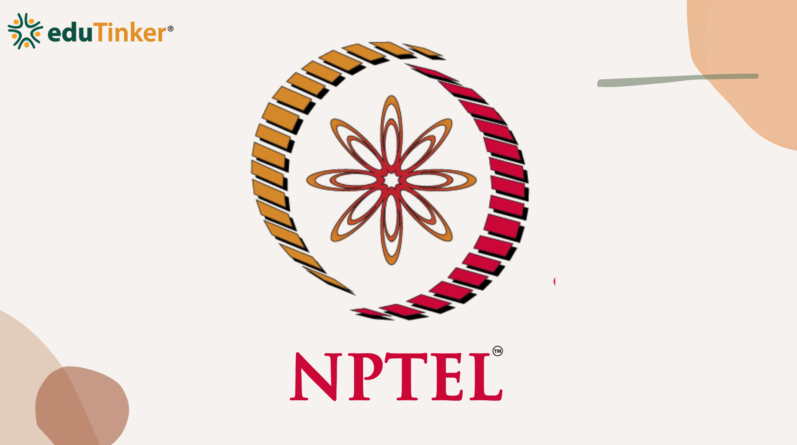

Data Science Career Roadmap
1. Courses
+Smart Learning for a Digital Future

Infosys Springboard
A free learning platform offering courses in Python, AI, Machine Learning, and professional skills with certification opportunities.

NPTEL
IIT-backed online courses in Machine Learning, Data Analytics, Programming, and core data science concepts with certifications.
2. Internships
+Internships That Shape Careers
Internships provide real-world exposure and bridge the gap between academic knowledge and professional skills in data science and analytics.

Forage
Virtual experience programs in collaboration with global companies. Students work on real-world simulations including analytics, business problem-solving, and data-driven decision making.
A professional networking platform where students can discover internships, connect with industry experts, and apply for roles such as Data Science Intern or Analytics Intern.
3. Hackathons
+Innovation in Action
Hackathons help students test technical skills, creativity, and problem-solving in real-world scenarios.
Unstop
A popular student engagement platform hosting competitions, case studies, quizzes, and hackathons in data science, AI, analytics, and business strategy.
Smart India Hackathon (SIH)
One of India’s largest national hackathons where students develop innovative solutions for real government and industry problem statements.
4. Coding Platforms
+Sharpening Skills with HackerRank & LeetCode
Strong coding skills are essential for a career in data science. Regular practice on coding platforms builds logical thinking, SQL expertise, and problem-solving ability.

HackerRank
Provides structured challenges in Python, SQL, Data Structures, and Algorithms. Widely used for hiring assessments and placement preparation. Practicing SQL queries and coding problems builds analytical confidence.

LeetCode
A globally recognized coding platform covering arrays, strings, dynamic programming, and database queries. Many tech interviews are based on LeetCode-style questions, making it essential for competitive preparation.
5. Project Hosting
+Showcasing Skills Through GitHub
Building projects is important — but showcasing them professionally is equally essential. GitHub serves as a digital portfolio platform where students can display skills and demonstrate real-world problem-solving abilities.

GitHub
GitHub enables version control, collaboration, and structured project documentation. Data science students can upload machine learning models, analytics reports, dashboards, and research experiments in a well-documented format.
A strong GitHub profile highlights coding style, project complexity, and technical depth. Recruiters often review repositories to evaluate practical skills and problem-solving approach.
6. Visualization Tools
+From Data to Decision-Making
Analyzing data is only half the task — presenting insights effectively is equally important. Tools like Tableau and Power BI transform raw data into meaningful visual stories and interactive dashboards.

Tableau
A powerful data visualization platform known for its intuitive drag-and-drop interface. It connects to Excel, databases, and cloud platforms, helping users create dashboards, apply filters, and perform drill-down analysis.

Power BI
Developed by Microsoft, Power BI integrates seamlessly with Excel and Azure. It enables real-time dashboards, automated reporting, and advanced data modeling for business analytics.
7. Cloud Technologies
+The Rise of Cloud Intelligence in Data Science
Cloud technologies form the backbone of modern data science and artificial intelligence applications. Platforms like AWS and Azure provide scalable, secure, and flexible infrastructure for handling massive data workloads.
Amazon Web Services (AWS)
AWS offers cloud storage, computing power, databases, and machine learning tools like EC2, S3, and SageMaker. Its scalable architecture allows organizations to build, deploy, and manage AI-driven applications efficiently.
Microsoft Azure
Azure integrates cloud solutions with enterprise tools and supports AI services, predictive analytics, and database management. It enables organizations to innovate securely while maintaining high compliance standards.
8. AI in Healthcare
+Medical Innovation Through Intelligent Technology
Artificial Intelligence is rapidly transforming healthcare by improving diagnostics, accuracy, and accelerating medical research. One powerful example is AI-assisted fertility diagnosis systems.
AI-Powered Medical Diagnostics
AI systems analyze microscopic images, detect patterns, and identify critical medical indicators with remarkable precision. In fertility research, AI-based systems like advanced scanning models assist in identifying viable cells with higher accuracy than manual examination.
These innovations demonstrate how AI bridges technology and healthcare — improving treatment success rates and offering new hope for patients worldwide.